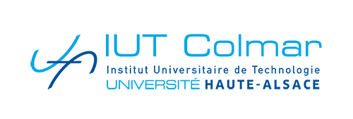

Colmar
J’ai choisi d’intégrer le B.U.T. de réseaux et télécommunications, car l’informatique est un domaine qui me passionne depuis des années, puis j’ai pu découvrir le réseau à travers mes cours de NSI. C’était un chapitre que je comprenais et que je trouvais intéressant. Et c’est pour cela que j’ai décidé d’intégrer cette formation. En fin de lycée, j’ai acquis mon baccalauréat, ainsi que l’abitur, qui est l’équivalent allemand, et c’est pour ca que j’ai décidé de suivre le parcours ICS. Son principe est que je vais effectuer ma première année en France, la seconde en Allemagne et la troisième en suisse. A la fin des trois ans, je devrai encore effectué un stage d’un semestre dans une entreprise allemande ou suisse.

Après ça ?
Après, je souhaiterais continuer mes études, dans un master ou une école d’ingénieurs. Toujours dans l’informatique et dans les réseaux. Pour moi, continuer mes études est une chose importante et permettra de m’ouvrir plus de porte au niveau professionnelle. L’une des possibilités serait l’école SUPINFO, soit dans l’expertise Systèmes et réseaux, soit dans la cybersécurité. Ce sont deux branches que je trouve intéressantes, et qui ont un avenir porteur

Pour quel métier ?
Enfin, les métiers d’ingénieur système et réseaux, ou bien d’administrateur réseau m’intéresse, car ce sont des métiers qui regroupent plusieurs domaines que j’apprécie et que je trouve intéressant. Exercer cet emploi dans une entreprise m’intéresse et me permettra de découvrir de nouvelles choses. De plus, ce sont des métiers qui nécessitent une formation constante aux nouvelles évolutions technologiques, et cela me plaît encore plus.